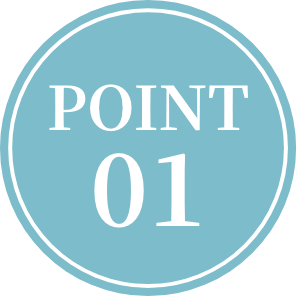

もっと無理なく見送りませんか？
家族なんだから

三田市の葬儀なら 家族葬のルミーナ


- ※1 無料の会員登録、資料請求後、割引券利用時の価格です。
- ※2 グループ会社実績。TPCマーケティングリサーチ㈱調べ争議件数（葬儀専門会社部門にてFCを除く2021年度）（葬儀専門会社とは葬儀のみを事業として扱い、自社で葬儀施工まで行う会社のこと）

「ありがとう」を伝える 大切な場所だから 気兼ねなく安心して過ごせる 時間をご提供したい 私たちルミーナはそんな想いで 葬儀を行なっております
大切な方とのお別れには様々な想いや、
感情が内面にわき上がるモノだと思います。
だからこそご遺族の悲しみを和らげる、
ホスピタリティの心を大切にし「選んで良かった」と思っていただける真心の込もったサポートをさせていただきます。
TV CM放送中


ルミーナホール三田中央
- 兵庫県三田市三田町12-37
- 規模：〜80人

JR福知山線「三田駅」から徒歩約7分空タグ空タグ空タグ
写真を押すと、大きな写真でご確認いただけます。


三田フラワータウンホール
- 兵庫県三田市武庫が丘7丁目8-1
- 規模：〜40人
神戸電鉄公園都市線「フラワータウン駅」から徒歩約6分
写真を押すと、大きな写真でご確認いただけます。
三田市聖苑
- 兵庫県三田市下槻瀬748番地1
- ※火葬のみ
JR三田駅から神姫バス「市之瀬口」下車 徒歩約700ｍ
中国自動車道「神戸三田IC」から車で約25分
写真を押すと、大きな写真でご確認いただけます。
西宮北山口ホール
- 兵庫県西宮市山口町下山口3丁目4-33
- 規模：〜40人
中国道「西宮北インター」から車で約1分空タグ空タグ空タグ空タグ空タグ空タグ空タグ空タグ空タグ空タグ空タグ空タグ
写真を押すと、大きな写真でご確認いただけます。


-
想いはそのまま 費用は最小限に
火葬式プラン
お通夜と告別式は行わず、火葬のみを行います。可能な限り葬儀の費用を抑え、身内だけで静かにお見送りしたい方におすすめのプランです。

お通夜と告別式は行わず、火葬のみを行います。可能な限り葬儀の費用を抑え、身内だけで静かにお見送りしたい方におすすめのプランです。

-
可能な限り葬儀の費用を抑えたい
-
身内だけで静かに見送りたい
-
短い時間でもしっかり見送りたい
※1 無料の会員登録、資料請求後、割引券利用時の価格です。
-
-
費用も時間も控えめに
一日葬プラン

お通夜は行わず、告別式と火葬のみを1日で行います。費用と時間は抑えつつ、告別式で故人様をしっかりお見送りしたい方は、こちらのプランがおすすめです。
お通夜は行わず、告別式と火葬のみを1日で行います。費用と時間は抑えつつ、告別式で故人様をしっかりお見送りしたい方は、こちらのプランがおすすめです。
-
費用は抑えたいが、別れの時間はほしい
-
お通夜はしなくても良い
-
告別式だけを行いたい
※1 無料の会員登録、資料請求後、割引券利用時の価格です。
-
-
従来の葬儀を小規模で
家族葬プラン
従来の葬儀を小規模で行うプランです。低価格ながら、故人様にしっかり寄り添い、ゆっくりと最期の時間を過ごすことができるプランです。

従来の葬儀を小規模で行うプランです。低価格ながら、故人様にしっかり寄り添い、ゆっくりと最期の時間を過ごすことができるプランです。
-
費用は抑えたいが、葬儀の流れは崩したくない
-
一般葬を希望していたが、時節柄、身内・親族だけで送ることにした
※1 無料の会員登録、資料請求後、割引券利用時の価格です。
-
大切な最期の時間を過ごしていただくために
ご遺族様に納棺の儀の
お手伝いをしていただいています
納棺の儀とは、ご遺体を清めてお棺にお納め、故人様があの世へと安心して旅立てるよう支度を整える儀式です。生前好きだったお酒を口元に含ませたり、安らかなお顔で眠っていただくための死に化粧のお手伝いを行っていただくなど。ありがとうの気持ちを込めて、かけがえのない最期の時間をお過ごしください。
まずはお気軽にご相談ください
※1 無料の会員登録、資料請求後、割引券利用時の価格です。
※2 グループ会社実績。TPCマーケティングリサーチ㈱調べ争議件数（葬儀専門会社部門にてFCを除く2021年度）（葬儀専門会社とは葬儀のみを事業として扱い、自社で葬儀施工まで行う会社のこと）
-

365日24時間 専任スタッフが いつでも迅速に対応
深夜早朝や土日祝も、専任スタッフがいつでもご対応いたします。緊急時やご依頼時はもちろん、ご不明な点や気になること、不安なことがあれば是非お気軽にご連絡ください。
深夜早朝や土日祝も、専任スタッフがいつでもご対応いたします。緊急時やご依頼時はもちろん、ご不明な点や気になること、不安なことがあれば是非お気軽にご連絡ください。
-
やさしい価格と サービス品質の両立
ルミーナは葬儀場を複数運営しているため、低価格でも質の良い葬儀を執り行うことができます。また、地域の風習やしきたりに合わせた葬儀を執り行うことも、地域密着の葬儀社ならではです。

ルミーナは葬儀場を複数運営しているため、低価格でも質の良い葬儀を執り行うことができます。また、地域の風習やしきたりに合わせた葬儀を執り行うことも、地域密着の葬儀社ならではです。
-
役所での手続きからご供養まで 葬儀前後も無料でサポート
火葬場・式場の予約、役所での手続きなど、葬儀前の手続きはもちろん、葬儀後の手続きやご供養まで無料でサポートいたします。安心して故人様との最期のひとときをお過ごしください。
火葬場・式場の予約、役所での手続きなど、葬儀前の手続きはもちろん、葬儀後の手続きやご供養まで無料でサポートいたします。安心して故人様との最期のひとときをお過ごしください。
まずはお気軽にご相談ください
※1 無料の会員登録、資料請求後、割引券利用時の価格です。
※2 グループ会社実績。TPCマーケティングリサーチ㈱調べ争議件数（葬儀専門会社部門にてFCを除く2021年度）（葬儀専門会社とは葬儀のみを事業として扱い、自社で葬儀施工まで行う会社のこと）
葬祭ディレクターが 親身になってサポートいたします

厚生労働省認定 葬祭ディレクターとは
葬祭ディレクターとは、厚生労働省に認定されている葬儀のプロフェッショナルです。相談から葬儀の進行、精神的なサポートまで、葬儀に関する豊富な知識と経験を兼ね揃えています。まごころを込めて、故人様とご遺族様の最期のお別れをお手伝いさせていただきます。
厚生労働省認定
1級葬祭ディレクター
堀 小羊江
私たち葬祭ディレクターの役目は、亡くなった方のご意向を尊重しつつ、ご遺族の悲しみに寄り添い、最適な葬儀を執り行うことです。
大切な方との最期の限られた時間に安心してお別れしていただけるよう、まごころを込めてサポートさせていただきます。ご遺族様にとっても、また亡くなられた故人様にとっても、葬儀が温かいお別れの時間となるようお手伝いをさせていただいています。

厚生労働省認定
1級葬祭ディレクター
奥川 学
葬儀は大切なご家族様とのお別れの儀式、そして残されたご遺族様の悲しみを和らげる儀式だと思っております。故人様との思い出を心の中で繋ぎ止めていただき、お別れをしていただきたいと思っております。
私自身、両親を亡くしており、色々してあげたかったと後悔した過去があります。ご遺族様には同じ思いをしないよう、ご提案させていただいています。
厚生労働省認定
1級葬祭ディレクター
堀 小羊江
最期の時間を
温かい時間にしてほしい
私たち葬祭ディレクターの役目は、亡くなった方のご意向を尊重しつつ、ご遺族の悲しみに寄り添い、最適な葬儀を執り行うことです。
大切な方との最期の限られた時間に安心してお別れしていただけるよう、まごころを込めてサポートさせていただきます。ご遺族様にとっても、また亡くなられた故人様にとっても、葬儀が温かいお別れの時間となるようお手伝いをさせていただいています。
厚生労働省認定
1級葬祭ディレクター
奥川 学
葬儀は残されたご遺族様の
悲しみを和らげる儀式
葬儀は大切なご家族様とのお別れの儀式、そして残されたご遺族様の悲しみを和らげる儀式だと思っております。故人様との思い出を心の中で繋ぎ止めていただき、お別れをしていただきたいと思っております。
私自身、両親を亡くしており、色々してあげたかったと後悔した過去があります。ご遺族様には同じ思いをしないよう、ご提案させていただいています。
ご依頼から葬儀までの流れ
-
まずはルミーナにお電話ください。
すぐにお迎えにあがります。ご危篤・逝去
-
ご遺族様のもとに、お迎えにあがります。その後、お身体の状態を安定に保つための処置を行います。
お迎え・ご安置
-
ご安置後、ご遺族様の負担にならない時間で、専門スタッフがご葬儀のお打合せをさせていただきます。 日程や場所、費用などのお打合せを行い、葬儀の内容を決定していきます。
ご準備・お打ち合わせ
-
ご希望のスタイルでお通夜・告別式を進行いたします。当日の状況や天候などに合わせ、タイムスケジュールやお料理の数など、柔軟に調整いたします。
お通夜・告別式
-

火葬場にて、ご火葬・骨上げ後、埋葬許可書を受け取ります。その後、葬儀の当日に、初七日法要を執り行います。
ご火葬・収骨
-
ご納骨は、四十九日の法要後に行います。葬儀後の各種お手続きも無料でサポートいたします。ご不明な点も含めてお気軽にご相談ください。
サポート・ご供養
まずはお気軽にご相談ください
※1 無料の会員登録、資料請求後、割引券利用時の価格です。
※2 グループ会社実績。TPCマーケティングリサーチ㈱調べ争議件数（葬儀専門会社部門にてFCを除く2021年度）（葬儀専門会社とは葬儀のみを事業として扱い、自社で葬儀施工まで行う会社のこと）
旅逝く人との最期の時間 まごころ込めてお手伝いします
株式会社ルミーナ
代表取締役
堀 康樹
ありがたいことに当社は年間800件ほどのご依頼を頂いておりますが、常に意識しているのは1回1回の葬儀を大切にまごごろを込めて取り組むということです。
ルミーナを開業する2004年以前まで、私は丹波市で寝具店の2代目として、寝具業・ギフト業を営み、ご婚礼布団や香典返しのギフト商品を販売しておりました。小さな地域ですので「地域の方々の役に立ちたい。もっと寄り添えるお仕事がしたい」と考えるようになり、その後葬祭業のルミーナを開業いたしました。
しかし開業したばかりで信用もなかったルミーナで、葬儀のご依頼をしていただける方は多くありませんでした。そして開業後100日が過ぎたころ、寝具店でお世話になったお得意様からご連絡をいただきました。「堀さん、始めちゃったんやねぇ。大変やろ。頑張ってなぁ」と声をかけていただき、まだ実績もないルミーナに葬儀のご依頼をいただきました。
その時「ご依頼いただけるのは、当たり前のことではない。故人様にとってもご遺族様にとっても1度きりの葬儀だからこそ、1回1回を大切に心を込めて取り組もう」この時の想いが、今のルミーナの取り組みにも繋がっています。
故人様とご遺族様にとって、葬儀はたった一度の大切で尊い時間。最期の時間を気兼ねなく安心してお過ごしいただけるよう、誠心誠意お手伝いさせていただきます。
よくあるご質問
年末年始・深夜でも急な相談や対応は
してもらえますか？
もちろん対応いたします。年末年始でも深夜でも、24時間、ご相談・お見積り・ご搬送も対応させていただきますので、些細なことでも何なりとご相談ください。また、年末年始でも、葬儀を執り行うことが可能ですが、1月1日はほとんどの火葬場が休みになっている場合がございますので、弊社にてお問合せください。
菩提寺がなくても葬儀はできますか？
はい、可能です。お寺さんの紹介も可能ですので、お気軽にご相談ください。
自宅でも葬儀は可能でしょうか？
もちろん可能ですが、ご自宅の間取りや葬儀の規模により、難しい場合もございます。事前にしっかりとご確認させていただきますので、ご安心ください。
葬儀費用はいつまでにお支払いすれば
いいですか？
葬儀が終了した日から1週間以内に、銀行振込や現金、クレジットカードでお支払いいただいております。
新型コロナウイルス感染症で亡くなった
場合でも葬儀は可能でしょうか？
はい、可能です。ご不明な点や不安な点がございましたら、お気軽にお問い合わせください。
病院で亡くなった遺体を葬儀場で
預かっていただくことは可能でしょうか？
はい、可能です。葬儀場を安置施設としてご利用いただけます。病院までお迎えに上がりますので、万が一の際はご連絡ください。
まずはお気軽にご相談ください
※1 無料の会員登録、資料請求後、割引券利用時の価格です。
※2 グループ会社実績。TPCマーケティングリサーチ㈱調べ争議件数（葬儀専門会社部門にてFCを除く2021年度）（葬儀専門会社とは葬儀のみを事業として扱い、自社で葬儀施工まで行う会社のこと）
私たちはご家族様がご遺族様との
最期のひとときを
安心して過ごしていただけるよう
心を込めてお手伝いさせていただいています
葬儀について不安なことや
わからないことがございましたら
いつでもお気軽にご相談ください
©2021 家族葬のルミーナ
今なら事前にご連絡いただいた方限定
最大10万円の割引券贈呈
閉じる


閉じる